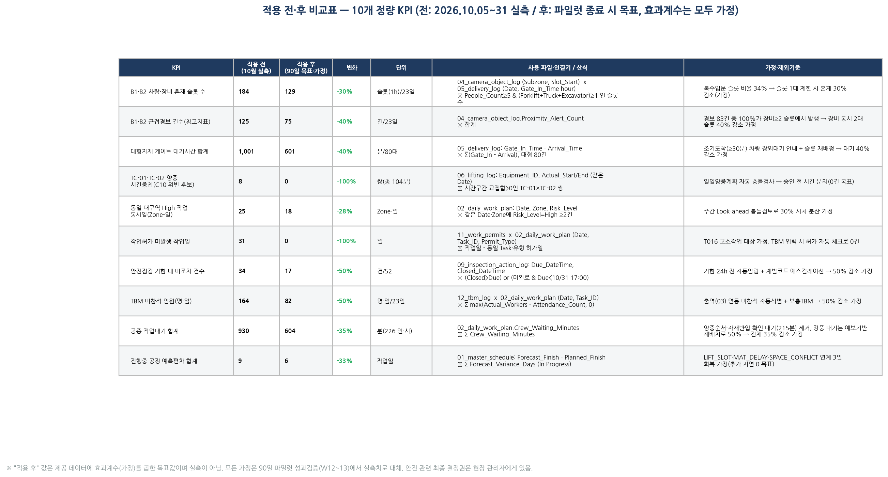
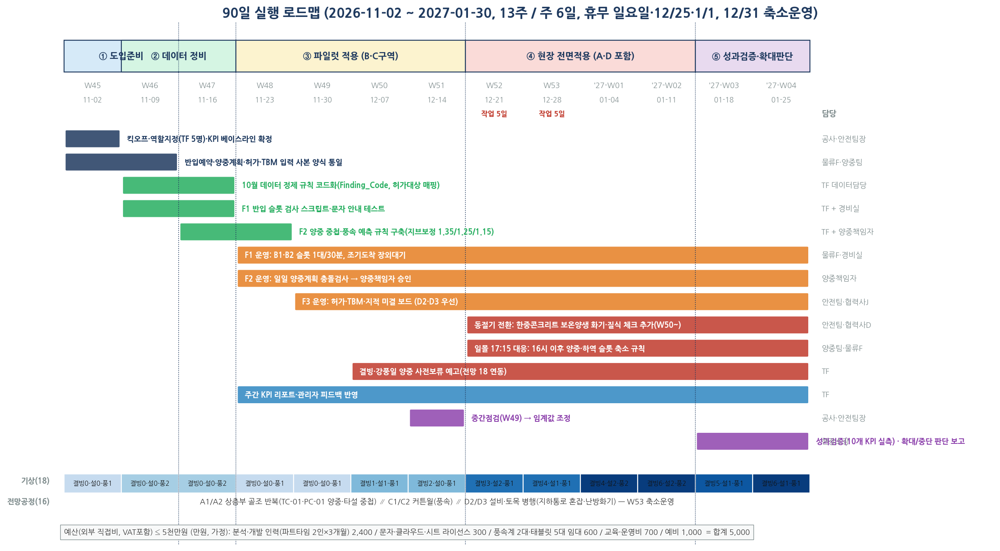

그림 5. 10개 정량 KPI 적용 전·후 비교표 — 사용 파일·연결키·산식·가정·제외기준 병기
| KPI | 계수 | 근거 (데이터 → 추론) | 보수적 처리 |
|---|---|---|---|
| B1·B2 혼재 슬롯 184 → 129 | −30% | 복수입문 슬롯 비율 34%. F1이 복수입문을 단일로 분산하면 해당 슬롯의 혼재가 단일 입문 수준으로 → 34%의 대부분 제거 | 34% → 30%로 하향 |
| B1·B2 근접경보 125 → 75 | −40% | B2 경보 83건의 100%가 장비≥2 슬롯. D1 사례는 규칙 전환으로 100% 제거(30→0). 트럭 분산이 장비 2대 동시 슬롯을 줄이면 비례 감소 | D1 상한 100% 대신 40% |
| 게이트 대기 1,001분 → 601 | −40% | 조기도착 평균 10.8분이 대기 12.5분의 86%. 장외대기 안내로 조기도착분이 게이트 대기에서 빠짐 | 86% → 40% |
| TC 시간중첩 8쌍 → 0 | −100% | 계획 단계에서 시간 교집합을 검사해 승인 전 분리 → 계획상 0. 단 당일 변경분은 남을 수 있음 | 실적 기준은 W12 실측 |
| 동일 Zone High 동시일 25 → 18 | −30% | 주간 Look-ahead 충돌검토로 시차 분산. D구역 11건이 대부분 → 구획별 SS 공정이라 완전 분리 불가 | 50% 아닌 30% |
| 허가 미발행 31일 → 0 | −100% | 작업계획 입력 시 허가대상 자동식별 → 허가 없으면 빨강 → 계획 확정 불가. 절차상 0 달성 가능 | T016 가정 제외 시 14→0 |
| 기한 내 미조치 34 → 17 / TBM 미참석 164 → 82 | −50% | D-1 알림·에스컬레이션, 출역 대조. 완료건 중앙값 2.7h → 알림만으로 처리 가능한 건이 다수. 구조적 원인(D2 적치공간)은 알림으로 안 풀림 | 절반만 가정 |
| 작업대기 930 → 604분 | −35% | 양중순서(75)+반입확인(140)=215분은 F1·F2로 제거, 강풍 550분은 예보 기반 재배치로 50%, 인계지연 165는 미반영 | (215+275)/930 = 53% → 35% |
| 진행중 편차 +9 → +6일 | −3일 | LIFT_SLOT·MAT_DELAY·SPACE_CONFLICT 중 조율로 회복 가능한 몫. 4주 목표 "추가 지연 0"이 1차 목표 | 기존 지연 회복이 아닌 추가 지연 차단 |
10/14는 대형자재 5대 입문(10시 3대), TC 시간중첩 2쌍(28분), B2 경보 6건, 아차 NM-0010(A2 인양물 하부 이동)·NM-0021(D2 작업대 경로 적치)이 겹친 날입니다.
| 시각 | 10/14 실제 (데이터) | Pre-Clash Gate 적용 시 (전날 16:00 체크리스트) |
|---|---|---|
| 10/13 16:30 | — (사전 검토 없음) | 🔴 10시 슬롯 트럭 3대(DL-0034·35·36) → 2대를 14시·15시로 재배정 제안 → 물류반장 수용 🔴 TC-01 LF-0025(13:05~) × TC-02 LF-0023(13:05~) 시간중첩 → TC-02를 13:40으로 이동 제안 → 양중책임자 승인 🟡 LF-0025 Target A2 하부에 T003 High 작업 → TBM 특별지시 삽입 🔴 T016 D2 고소작업 허가 없음 → 협력사 J 허가 신청 → 승인 후 계획 확정 |
| 09~11시 | B2 트럭 3대 동시, 경보 4건, FL-01·02 교차 | 트럭 1대 → 경보 0~1건 예상(단일 입문 슬롯 평균 0.92 → 분산 후 0.19 수준) |
| 13:05~13:35 | TC-01·TC-02 동시 선회 10+18분, A2 하부 작업자 인양물 아래 이동(NM-0010) | TC-02 35분 후행 → 중첩 0. A2 작업자는 TBM에서 "13시 양중 하부 출입통제" 사전 인지 |
| 14:35 | D2 작업대 이동경로에 자재 적치(NM-0021), 허가 없는 고소작업 | 허가 사전확인 과정에서 통로 확보 체크 → 적치 위치 변경. (적치공간 부족은 F3로 해결 안 됨 — 한계) |
| 결과 | 경보 6, 아차 2, TC 중첩 28분, 허가 누락 1 | 경보 1~2, 아차 0~1, TC 중첩 0, 허가 누락 0 [시뮬레이션 추정] |

그림 6. 90일 실행 로드맵(2026-11-02~2027-01-30, 13주, 주 6일, 휴무 일요일·12/25·1/1, 12/31 축소운영). 하단 띠는 18 기후 전망(결빙·적설·강풍일)과 16 전망공정
| 단계 | 주차 | 핵심 활동 | 담당 |
|---|---|---|---|
| ① 도입준비 | W45~46 | TF 5명(공사·안전·물류·양중·데이터) 구성, KPI 베이스라인 확정(본 문서 §7), 입력 사본 양식 통일 | 공사·안전팀장 |
| ② 데이터 정비 | W46~47 | 정제규칙 코드화(Finding_Code·허가대상 매핑), F1·F2 규칙 구축, 문자 안내 테스트, 위험성평가에 동절기 항목 추가(현재 0건) | TF |
| ③ 파일럿 | W48~51 | B·C구역 F1·F2 운영, F3는 D2·D3 우선. 주간 KPI. W49 중간점검으로 임계값 조정 | 물류F·양중책임자·안전팀 |
| ④ 전면적용 | W52~'27W02 | A·D 포함 전 구역. 동절기 전환(R8): 보온양생 열풍기·갈탄 → 화기허가·가스측정 대상 추가, 지하 난방기구 환기 체크, 일몰 17:15 → 16시 이후 양중·하역 슬롯 축소, 결빙·강풍일 사전보류 예고, W53 축소운영 반영 | 전 TF |
| ⑤ 검증·판단 | '27W03~04 | 10개 KPI 실측 vs §7 목표, 협력사 수용률, 확대/중단 보고 | 현장소장 |
| 항목 | 산출근거 | 금액(만원) |
|---|---|---|
| 분석·개발 인력 | 파트타임 2인 × 3개월 × 400 | 2,400 |
| 문자 API·클라우드·시트 | 월 100 × 3 | 300 |
| 풍속계 2대·태블릿 5대 임대 | 월 200 × 3 | 600 |
| 교육·운영비 | 협력사 12개사 교육 2회, TBM 자료 | 700 |
| 예비 | 협력사 수용성 대응, 동절기 추가 점검 | 1,000 |
| 합계 | 5,000 |
기존 인프라 활용 가정: 현장 CCTV·PC·인터넷·기상 관측. 신규 센서·BIM·GPS 미도입. 본 분석 스크립트(analysis/*.py)가 F1~F3 프로토타입으로 전용되어 개발비를 낮춤.
| 구분 | 효과 | 근거 |
|---|---|---|
| 안전 | B1·B2 근접경보 −40%, 혼재 슬롯 −30% | 경보 100%가 장비≥2 슬롯 → 분산 효과 |
| TC 시간중첩 0, 허가 미발행 0 | 계획 승인 전 자동 검사 | |
| 아차사고 재발 유형(차량·타설, 지게차, 양중접근·시야, 통로간섭) 11건 → 차단 목표 | R1·R3·R4·R5 직접 대응 | |
| 공정 | 작업대기 326분(≈79인·시) 회수 | 양중순서·반입확인 215분 제거 + 강풍 재배치 |
| 진행중 공정 편차 +9 → +6일, 4주 목표 추가지연 0 | LIFT_SLOT·MAT_DELAY 조율 | |
| 관리 | 크레인 가동률 52~54% → 대기 사유 중 "자재순서 조정·양중 계획 없음" 축소 | F2 순서표 |
| 안전관리 시점이 "발생 순간" → "전날 16시"로 이동. 결정 기록이 쌓여 임계값이 현장 맞춤으로 보정 | 피드백 루프 |
10개 KPI(§7 그림 5): 혼재 슬롯 · 근접경보 · 게이트 대기 · TC 시간중첩 · Zone High 동시일 · 허가 미발행 · 기한 내 미조치 · TBM 미참석 · 작업대기 · 공정 편차. 각각 파일·연결키·산식·가정·제외기준 명시. 주 1회 자동 집계, W12~13 실측으로 "후" 값 대체.
| 현재 데이터만으로 판단 가능 | 판단 불가 → 추가 필요 |
|---|---|
| 구역·시간대별 밀집·경보 상대 비교, 반입 슬롯 집중, TC 시간중첩, 허가·TBM·조치 누락, 공정 편차·대기 사유 | 실제 충돌 거리(CCTV 프레임·GPS 없음), TC 선회 방향·지브 길이(C10 확정 불가), 하역장 수용능력(동시 하역 이력≠능력), 구획별 물량, 복합 지연원인(코드 1개/공정), 협력사별 조기도착 성향(23일 표본) |
협력사의 재배정 수용 여부, 게이트 통행 우선권 관행, 양중 우선순위의 공정상 긴급도, 지적 조치의 현장 실효성, 동절기 실제 기온(18은 가상 전망). 이들은 관리자의 결정 영역으로 남기며, Pre-Clash Gate는 결정에 필요한 "겹침"을 전날 보여주는 데까지만 합니다.